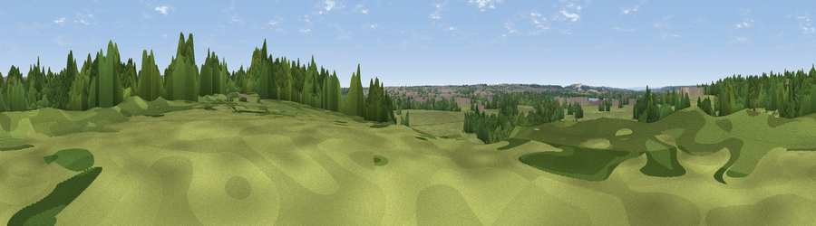

Viewpoint near Dudsbury
#44527 in England · top 89% of its area beats it · near DudsburyWhere it is
The exact computed spot (SZ 07583 97909). Click the marker for map links.
The view, rendered

A 360° render of this exact spot computed from the terrain model, tree cover and land cover — summer colours, afternoon light, calibrated against photographs of famous viewpoints. Real trees, hedges and buildings will differ in detail.
The panorama
Grey silhouette: terrain skyline in each direction (720 bearings, Earth curvature and refraction included). Dashed green: skyline with trees (+15 m) and buildings (+8 m) as obstacles. Blue strip: how far the ground is visible on each bearing.
Where the view opens
Wedge length = distance to the farthest visible ground on that bearing (vegetation-aware). Rings at 10, 25 and 50 km.
What fills the view
71% grassland · 22% woodland · 5% built-up ·
Angular shares of the visible panorama (visual magnitude), not map area. Landscape diversity 0.34 (0–1 Shannon).
Key numbers
More beautiful places nearby
The staircase of upgrades: each row has a higher view potential than everything closer. Driving times are estimates from straight-line distance, calibrated against real road routing — check an actual route before setting out.
| Place | Direction | Drive | Score |
|---|---|---|---|
| Viewpoint near Hampreston | NW · 4 km | ~10 min | 30.5 |
| Viewpoint near Merley | WSW · 5 km | ~10 min | 43.7 |
| Viewpoint near Merley | WSW · 5 km | ~11 min | 50.5 |
| Viewpoint near Poole | SW · 7 km | ~15 min | 55.7 |
| Viewpoint near Corfe Mullen | WSW · 10 km | ~19 min | 60.9 |
| Viewpoint near Studland | S · 16 km | ~28 min | 62.6 |
| Viewpoint near Studland | S · 17 km | ~29 min | 80.9 |
| Viewpoint near Studland | SSW · 17 km | ~30 min | 82.2 |
50.78071, -1.89381 · source: osm viewpoint · position refined by local search. Computed location — check access rights before visiting.